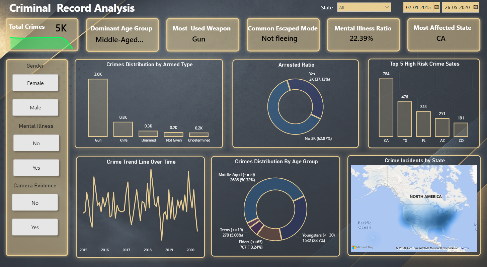

A modern analytical project focused on identifying criminal trends, demographic patterns, behavioral indicators, and operational insights using Power BI and data storytelling techniques.
A national crime investigation department collects criminal records from multiple regions including urban and rural areas across different states. The dataset contains information about crime types, criminal activities, victim demographics, arrest status, locations, and time-based incidents.
The management team wants to analyze crime patterns, high-risk areas, criminal activity trends, and law enforcement performance using an interactive dashboard built in Tableau.
The goal is to transform raw crime data into meaningful insights that can help authorities improve public safety, optimize police resources, and support strategic decision-making.
| Column Name | Description |
|---|---|
| Id | Unique identifier for each incident record. |
| Name | Name of the individual involved in the incident. |
| Date | Date on which the incident occurred. |
| Manner Of Death | Method or type of death reported in the incident. |
| Armed | Indicates the type of weapon or object carried by the individual. |
| Age | Age of the individual involved in the incident. |
| Gender | Gender of the individual. |
| Race | Ethnicity or racial background of the individual. |
| City | City where the incident took place. |
| State | State where the incident occurred. |
| Signs Of Mental Illness | Indicates whether signs of mental illness were observed. |
| Threat Level | Threat level assigned during the incident. |
| Flee | Status showing whether the individual attempted to flee. |
| Body Camera | Shows whether body camera evidence was available during the incident. |
Measures the total number of incidents available in the dataset.
Represents the age group most frequently involved in incidents.
Shows the percentage of incidents involving mental illness indicators.
Identifies the state with the highest criminal incidents.
Highlights the most frequently used weapon category.
Analyzes criminal incidents based on weapon categories.
Highlights states with the highest criminal activity.
Represents crime distribution across age groups and races.
Provides dynamic gender-based analysis using interactive filtering.
Displays geographical distribution of criminal incidents.
